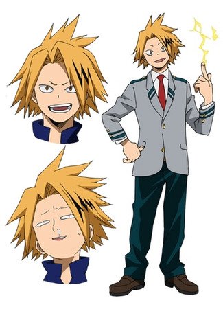

Денки Каминари
Денки Каминари
- Пол: ♂ Мужской
- Рост: 168 см.
- Возраст: 16
- Группа крови: O
- Родился в: Японии
Денки Каминари, также известный, как Герой-электрошокер: Разряд молнии — ученик класса 1-A академии Юэй. Тренируется, чтобы стать профессиональным героем.
Не трать силы попусту на разговоры. Костюмы на нас? Да. В эпицентре событий? Да. Значит, мы Герои!
Внешность
У Денки светлые - желтоватые волосы средней длины, разделенные пробором, чуть левее середины. С левой части его волос, на челке, что закрывает четверть его лица, и даже часть левого глаза у него черные пряди, напоминающие молнии. У него светлые и тонкие и короткие брови, которые часто сдвинуты друг к другу. Глаза Каминари имеют треугольно-заостренную форму. Он среднего роста, но довольно худощав по сравнению с другими учениками академии.

В школьное время, носит форму академии Юэй - белую рубашку с красным галстуком, школьный серый с темно-зелеными полосками пиджак, застегнутый только на верхнюю пуговицу и красный галстук. Темно-зеленые штаны и коричневые ботинки на толстой подошве.
Его первый геройский костюм состоял из белой рубашки, расстегнутого черного пиджака и белыми линиями в форме молний, и черных штанов с такими же белыми линиями, бегущими по его ногам. На своем правом ухе он носил радиоантенну, что позволяла лучше контролировать его причуду.
Обновленный костюм состоит из белой футболки с V- образным вырезом, коротким черным пиджаком со стоящим воротником с такими же белыми линиями, что уже гораздо больше напоминают молнии на его воротнике и линии низа. Также белые молнии проходят вокруг каждого из его плеч, но они уже с желтой обводкой. На правом запястье он носит прибор с круговым механизмом, из которого он может стрелять дисковыми указателями, что помогают его прицеливаться своей причудой, уменьшая воздействие его причуды на его организм. Также он носит очки со синими стеклами и белой оправой.
Личность
Денки ведет себя коллективно со своими одноклассниками, пытаясь выдать себя за льстеца. Он не очень успешен в этом, его часто отвергают либо игнорируют. Он также задорен и немного извращенный, иногда присоединяется к Минору Минете в его выходках.
Денки не очень ярок в академии, ему требуется помощь, когда дело доходит до учебы. Он не проявляет большого интереса к занятиям, и, как правило, нервничает перед тестами. Несмотря на это, он может показать глубокие знания в такой области, как литература. Отсутствие остроумия часто становится поводом для насмешек, в частности от Кьеки Джиро.
В боевых ситуациях он очень быстро начинает паниковать. Не любит использовать причуду, когда рядом с ним находятся союзники, боясь причинить им вред. Но когда он знает, что его союзники не пострадают от его причуды, становится более уверенным в своих способностях. Также не любит, когда кто-либо другой засматривается на его одноклассников.
Если Денки сделает слишком сильный заряд электричества, его мозг тоже замыкает и примерно на час он становится хихикающим идиотом. В этой форме он всегда показывает большие пальцы, чтобы дать другим понять, что он в порядке.
Причуда
 Статическое электричество: Причуда Денки позволяет ему покрывать свое тело электричеством. Превышение предела ее мощности проводит к короткому замыканию его мозга.
Статическое электричество: Причуда Денки позволяет ему покрывать свое тело электричеством. Превышение предела ее мощности проводит к короткому замыканию его мозга.